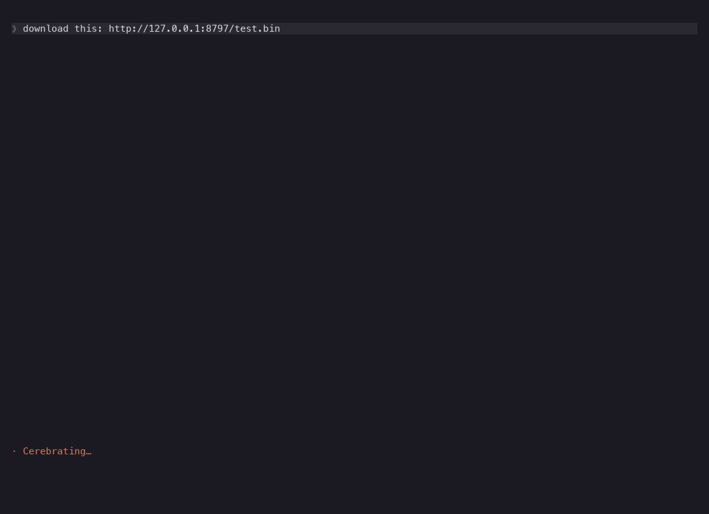

a download manager for ai agents.
the agent runs idm get URL and gets one line of json back: the file's path, or an error code and the command to run next.
it takes file links, share links (google drive, dropbox, onedrive, github, hugging face) and videos (youtube, instagram, tiktok and more).
python 3.9+. on 3.11+ it brings its own video tools.
this is dotty. each dot is 1/32 of the file.
you stopped watching.
the download carries on.
press space to pause it. p, r and q work too.
install
as a claude code plugin, or as a command for any agent.
claude code pluginidm + skill + dotty
the idm command, a skill that tells claude when to use it, and dotty under each download. for videos, add the command line install too: claude code then runs that one.
/plugin marketplace add Ajinkya259/IDM-for-Agents/plugin install idm-for-agents@idm-for-agentsclaude plugin install idm-for-agents --marketplace Ajinkya259/IDM-for-Agentscommand lineidm + video tools
the idm command, for any agent or terminal. on python 3.11+ it brings yt-dlp, ffmpeg and deno too, so videos work with nothing else.
pipx install git+https://github.com/Ajinkya259/IDM-for-Agentsuv tool install git+https://github.com/Ajinkya259/IDM-for-Agentspipx runpip idm-for-agents install -U yt-dlpopen source, mit license. the code is on github.
how it works
from a link to a file, in three steps.
-
1. a link
the agent runs idm get URL
a share link is turned into the file's own link first. a video goes through yt-dlp.
-
2. idm
it downloads in the background
up to 16 connections (8 by default). it resumes after any stop, and checks every piece against the file's etag, so a file that changes mid-download fails with FILE_CHANGED instead of being saved as a mix.
-
3. one line of json
within 90 seconds, the agent gets
done: the file's path.
still going:nextisidm wait ID.
failed: one of 18 error codes, ahint, and innextthe command to run.
an error page is never saved as the file.
$ idm get https://example.com/big.iso {"ok": true, "job": "3f9a1c", "state": "downloading", "percent": 7, "eta": 158, "next": "idm wait 3f9a1c"} $ idm get https://example.com/members/report.pdf {"ok": false, "job": "77b0e2", "state": "failed", "error": {"code": "AUTH_REQUIRED", "message": "the server said 403 Forbidden", "retryable": false, "hint": "..."}, "next": "idm get https://example.com/members/report.pdf -d /Users/you --cookies <cookies.txt>"}
- 0
- fine
- 1
- failed
- 2
- a bad command
- 3
- failed, worth retrying: run
next

dotty
the face you watch while a download runs: in your terminal, and under the agent's command in claude code.
32 dots float around it. each one is 1/32 of the file, and flies home when its share arrives. the face says how it's going.
- startinglooking for the file
- downloadingthe file is coming in
- pausedasleep till you resume
- troublethe server pushed back: it retries, or it failed
- donethe file is saved
keys
while idm get, idm wait or idm watch shows a download in your terminal. not when an agent runs idm.
pause, or resume
pause
resume
stop watching. the download keeps going in the background.
in idm get: pause the download. in idm wait or idm watch: stop watching.
they work on dotty at the top of this page too.
commands
each one replies with one line of json when an agent runs it.
tested
real claude code agents (sonnet), each in an empty folder, asked to download a link while a local server misbehaves on purpose. a program checks the file on disk, byte for byte. 5 runs of each, with idm and with plain tools.
| what goes wrong | idm | curl, wget… |
|---|
10 MB from a slow server that allows 2 connections
idm opens both connections the server allows. curl opens one.
186checks in tests/run_tests.py, on python 3.9 and 3.14.
about
who made this.
hi, i'm ajinkya.
i build ai products: voice agents, retrieval, and the evals that check them.